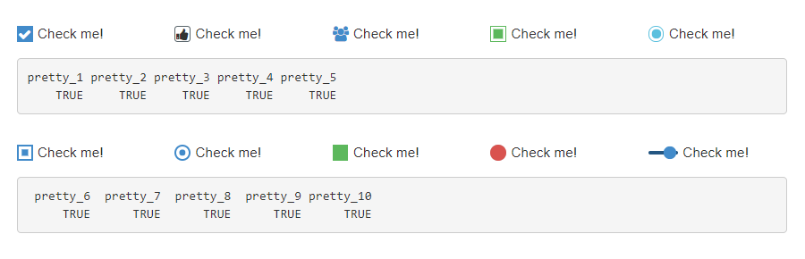
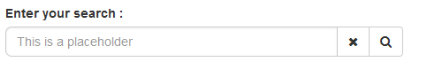
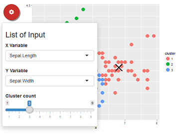
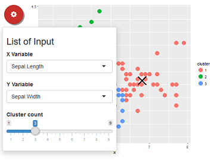

Extend widgets available in shiny


Overview
This package provide some custom widgets to pimp your shiny apps !
You can replace classical checkboxes with switch button, add colors to radio buttons and checkbox group, use buttons as radio or checkboxes. Each widget has an update method to change the value of an input from the server.
Installation :
# From CRAN
install.packages("shinyWidgets")
# From Github
# install.packages("devtools")
devtools::install_github("dreamRs/shinyWidgets")Demo :
shinyWidgets::shinyWidgetsGallery()A live version is available here : http://shinyapps.dreamrs.fr/shinyWidgets
Widgets available :
- Bootstrap switch
- Material switch
- Pretty Checkbox
- Sweet Alert
- Slider Text
- Knob Input
- Select picker
- Checkbox and radio buttons
- Search bar
- Dropdown button

Material switch
Turn checkboxes into toggle switches (again) : 
materialSwitch(inputId = "id", label = "Primary switch", status = "danger")Pretty Checkbox
Checkbox and radio buttons with the beautiful CSS library pretty-checkbox : 
prettyCheckbox(
inputId = "pretty_1", label = "Check me!", icon = icon("check")
),
prettyCheckbox(
inputId = "pretty_2", label = "Check me!", icon = icon("thumbs-up"),
status = "default", shape = "curve", animation = "pulse"
),
prettyCheckbox(
inputId = "pretty_3", label = "Check me!", icon = icon("users"),
animation = "pulse", plain = TRUE, outline = TRUE
),
prettyCheckbox(
inputId = "pretty_4", label = "Check me!",
status = "success", outline = TRUE
),
prettyCheckbox(
inputId = "pretty_5", label = "Check me!",
shape = "round", outline = TRUE, status = "info"
),
...Sweet Alert
Displays a message to the user :

See examples in ?sendSweetAlert.
Request confirmation from the user :

See examples in ?confirmSweetAlert.
Slider Text
Slider with strings, to pass whatever you want : 
sliderTextInput(
inputId = "mySliderText",
label = "Your choice:",
grid = TRUE,
force_edges = TRUE,
choices = c("Strongly disagree",
"Disagree", "Neither agree nor disagree",
"Agree", "Strongly agree")
)Knob Input
A jQuery based knob, similar to sliderInput or sliderTextInput: 
knobInput(
inputId = "myKnob",
label = "jQuery knob example:",
value = 0,
min = -100,
displayPrevious = TRUE,
lineCap = "round",
fgColor = "#428BCA",
inputColor = "#428BCA"
)Select picker
Dropdown menu with a lot of options : 
pickerInput(
inputId = "myPicker",
label = "Select/deselect all + format selected",
choices = LETTERS,
options = list(
`actions-box` = TRUE,
size = 10,
`selected-text-format` = "count > 3"
),
multiple = TRUE
)Search bar
A text input only triggered by hitting ‘Enter’ or clicking search button :

searchInput(
inputId = "id",
label = "Enter your search :",
placeholder = "This is a placeholder",
btnSearch = icon("search"),
btnReset = icon("remove"),
width = "100%"
)Dropdown button
Hide input in a button :  

dropdownButton(
tags$h3("List of Input"),
selectInput(inputId = 'xcol', label = 'X Variable', choices = names(iris)),
selectInput(inputId = 'ycol', label = 'Y Variable', choices = names(iris), selected = names(iris)[[2]]),
sliderInput(inputId = 'clusters', label = 'Cluster count', value = 3, min = 1, max = 9),
circle = TRUE, status = "danger", icon = icon("gear"), width = "300px",
tooltip = tooltipOptions(title = "Click to see inputs !")
)And others !
 Victor Perrier
Victor Perrier Fanny Meyer
Fanny Meyer David Granjon
David Granjon